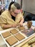

Multidisciplinary Artist · Sculpture & Installation
Working at the threshold between collective memory and shared fiction — sculpture, installation and mixed media. Based in Salamanca, Spain.
View Work
Mixed Media Installation · 2025 · Unique work
A speculative archive that does not document the past, but generates possible fictions from everyday objects.
Through a participatory website, the viewer can contribute their own fictions, turning the archive into a collective organism in constant expansion.
Mixed Media Installation · 2025 · Unique work
An exploration of the boundary between the living and the inanimate.
Through natural materials and mythopoetic references, the work invites the viewer to approach, observe, touch and feel.
Immersive Installation · 2024 · Salamanca · Unique work
An immersive installation exploring the frontier between ancestral spirituality and contemporary digital culture.
The public does not observe from outside — they enter, touch the objects and participate in the ritual.
Video
Photography & Collage · A5 · 2025 · Unique work
A family archive reconstructed through photography and collage. The project works with the materiality of memory.
The domestic photograph becomes a raw material for speculation about identity, origin and displacement.
Artist Statement
“My practice sits at the threshold between collective memory and shared fiction: that space where what we remember becomes something we inhabit as if it were real.”
Anastasiia Lantukh (Sumy, Ukraine, 2003) is a multidisciplinary artist currently living and working in Spain. Her life path, marked by displacement between countries due to the war, has shaped an open, sensitive gaze in constant search of connection with other cultures and ways of thinking.
She works primarily with sculpture and installation, exploring materials such as wood, fabric, thread, paper, clay, metal, resin and ceramics.
Cultural, linguistic and climatic displacement is the engine of her work. The installation does not end in the object, but in the encounter.
Open to collaborations, exhibition projects, residencies and commissions.